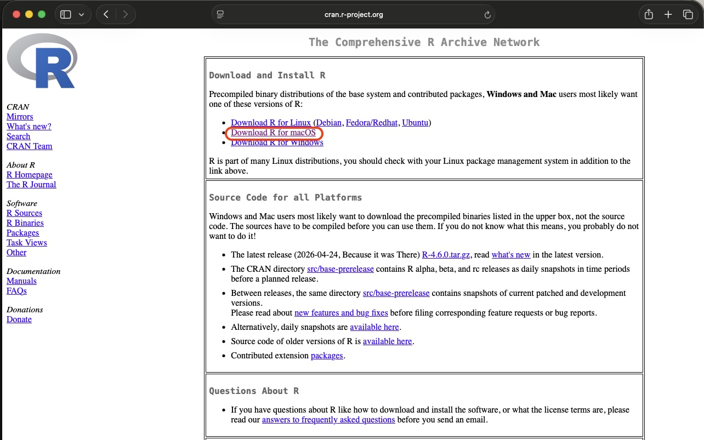
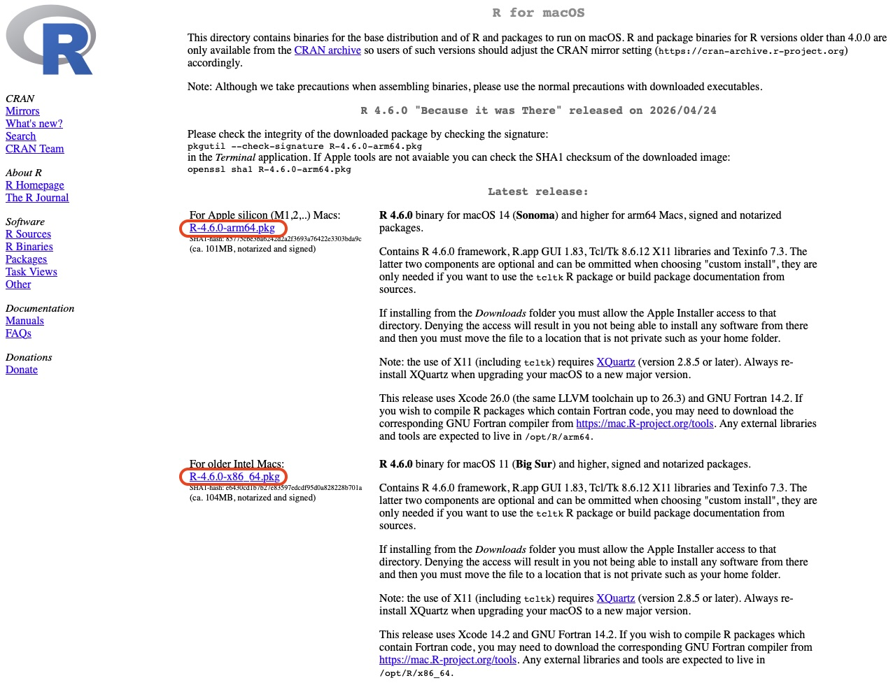
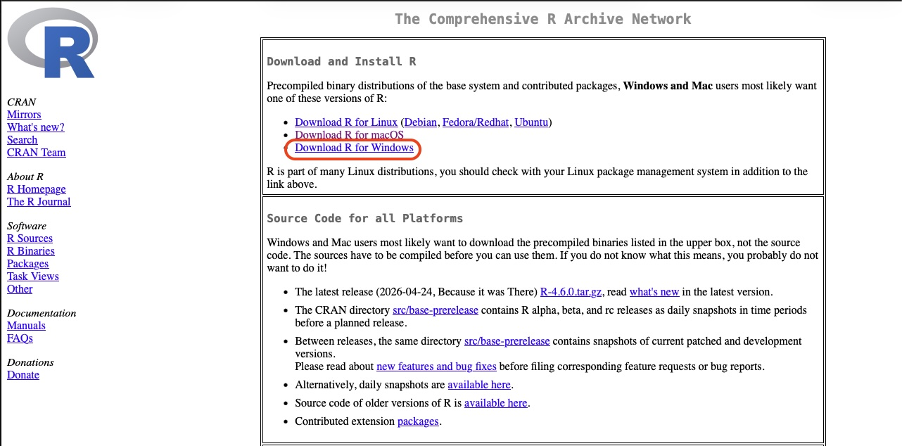
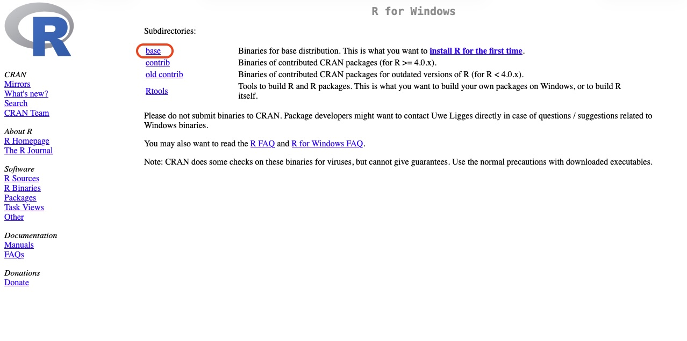
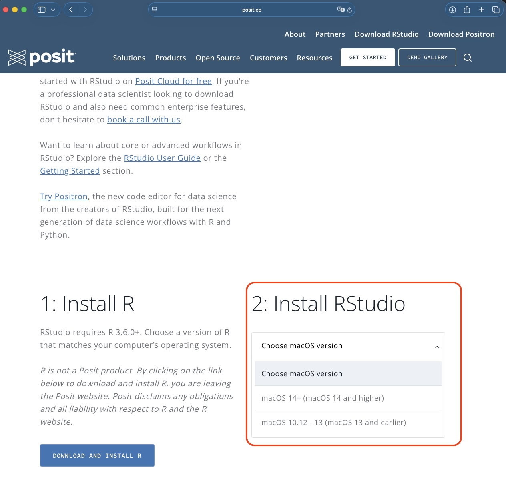
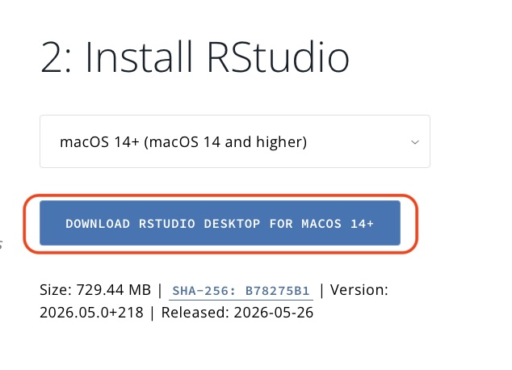

Install R and RStudio
Before starting the tutorials, you need to install two programs:
- R — the programming language we will use.
- RStudio Desktop — an easier interface for writing and running R code.
Important: Install R first, then install RStudio.
Install Links
- R download — available for Windows, Mac, and Linux
- RStudio Desktop download — available for Windows, Mac, and Linux
Install R
Mac
Go to the R download page:
Click:
Download R for macOS

- Download the latest .pkg installer.
The file name will look something like:
R-4.x.x-arm64.pkgor
R-4.x.x.pkg
Choose the appropriate installer for your Mac (M1/M2 or Intel).
- Open the downloaded .pkg file and follow the installation instructions.
- When the installation is complete, you can verify that R is installed by opening the Terminal and typing:
R --versionYou should see the version of R that you installed.
Windows
Go to the R download page:
Click:
Download R for Windows

Click:
base

- Click the link to download the latest version of R (e.g., R-4.x.x-win.exe).
- Open the downloaded .exe file and follow the installation instructions.
Install RStudio
After installing R, install RStudio Desktop.
MAC
- Go to the RStudio Desktop download page:
https://posit.co/download/rstudio-desktop
- Click
Install Rstudioand choose the Mac version.

Click the
DOWNLOAD RSTUDIO DESKTOP FOR MACOS ++button.
Open the downloaded .dmg file from your Downloads folder.
Drag the RStudio icon into the Applications folder.
Open RStudio from your Applications folder.
Windows / PC
- Go to the RStudio Desktop download page:
https://posit.co/download/rstudio-desktop
- Download the Windows installer.
The file name will look something like:
RStudio-202x.xx.x-xxx.exeOpen the downloaded .exe file.
Follow the installation steps using the default options.
Open RStudio from the Start Menu.
Alternatively, you can directly download the Windows installer using this link:
https://download1.rstudio.org/electron/windows/RStudio-2026.05.0-218.exe
The file name will look something like:
RStudio-202x.xx.x-xxx.exeOpen the downloaded .exe file.
Follow the installation steps using the default options.
Open RStudio from the Start Menu.
Setup R and Rmd files to be opened in RStudio
After installing R and RStudio, you may want to set up your computer so that R and Rmd files automatically open in RStudio when you double-click them.
Mac
- Find an R or Rmd file on your computer (e.g., in your Downloads folder).
- Right-click the file and select Get Info.
- In the “Get Info” window, find the “Open with:” section.
- Click the dropdown menu and select RStudio.
- Click the Change All… button to apply this setting to all R or Rmd files.
- Confirm the change when prompted.
Windows
- Find an R or Rmd file on your computer (e.g., in your Downloads folder).
- Right-click the file and select Open with > Choose another app.
- In the “How do you want to open this file?” window, select RStudio.
- Check the box that says Always use this app to open .R/.Rmd files.
- Click OK to apply the change.